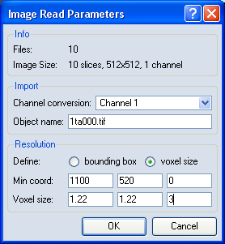

This is a step-by-step tutorial on how to use Large Disk Data to analyze micro-vascular networks in human brain tissue. Please note that another tutorial is available to learn how to extract filament networks from vessels or neuron images. To follow this tutorial you should be familiar with the basic concepts of Amira. In particular you should be able to load files, to interact with the 3D viewer, and to connect display modules to data modules. All these issues are discussed in the getting started section.
We are going to load 4 overlapping bricks of a large data set. The goal is to merge these bricks into one large volume (Large Disk Data). The volume will be stored on disk only -- subvolumes can be loaded into memory. Some basic operations can directly be applied to the large volume.
For the tutorial you should have access to a directory to which you're allowed to write files.
We don't provide any TIFF data with this tutorial. Hopefully you have a couple of blocks (AmiraMesh format) to test the algorithm on. Generally it is a good idea to import them into Amira and specify an approximate bounding box near the correct position.
You should have your image data as stacks of numbered 2D images. The topmost slice should have the lowest number. File formats recognized by Amira can be found in the File Formats section of the user's guide. A good choice is TIFF because it provides lossless compression and is readable on many different systems.
You should also know the position in 3D of the lower left front corner of the brick you're going to import and the voxel size.
Choose File/Open Data.... A File Dialog pops up. You can now select all of the 2D images comprising the brick. After you press Load, another dialog pops up:

Enter the position and the voxel size of your block. After you press OK, the files are loaded into one block. A new green icon will appear in the Pool. Select it and select File/Save Data As... to store it on disk. Name it 1ta.am. In this way you should proceed with all of your data.
After importing your data, you should copy the files to another directory where all the processing will be done. In this way the original data is not touched and you can revert back to it if something goes wrong.
Amira has a special data object to store links to files on disk and arrange them in 3D. It is called Mosaic.
A green icon appears. When you select it you see that it contains no bricks. The buttons below the info line are used to add data objects.
The selected files are added to the Mosaic. The Info port shows the overall number of the bricks added up to now. You can visualize the bricks with the DisplayMosaic module.
A special module allows the bricks to be exactly aligned based on their gray values.
A maximum intensity projection (mip) of each block is computed. These mips are aligned and the resulting transformations are applied to the bricks on disk.
It is possible to apply the same operation to all the bricks at once. To do this you must create a template for this operation. This could either be one brick with an editor (e.g. Digital Image Filters) attached or a compute module (e.g. Resample). We're going to demonstrate these two examples now. But first we should correct for the Z-Drop:
Next we're going to apply a digital filter to all blocks:
Another useful filter might be Median2D or the Median3D. For Median3D, select Median from the first pulldown menu of the Filter port, and 3D from the second pulldown menu. The application of the latter filter takes some time but leads to good results.
The script object starts to load each brick of the mosaic, applies the filter to it, and writes it back to the same location on disk. There are no warnings about this overwrite.
In the next step we're going to resample every brick to an isotropic voxel size. This is only an optional step and might lead to smoother central lines in the following processing. But it increases size of the data on disk by a factor of about three. You should carefully consider whether you want to perform this step or not.
All bricks are resampled and saved to the same position. It is a good idea to sample all bricks to an isotropic voxel size. It improves the result of the distance map and the skeletonization we're going to apply.
As a standard prefiltering procedure you should:
If the results are not satisfactory, you should try to extend the prefiltering step.
The next step is to create a new Large Disk Data object and sample the bricks onto it. The overlapping regions can be blended with each other and a border can be added.
Note: The thinning algorithm expects a black border around the data. The border should be at least of size lenOfEnds used during thinning (see below). By default a border of 15 voxels on each side in each dimension. Be sure to check this if you manually set lenOfEnds.
You can see some options in the Properties Area. The default options are fine for the tutorial.
A new green icon which represents the new data object will appear in the Pool. After this the bricks will be loaded one after the other and will be sampled. This may take some time.
In the Properties Area some information about the data stored on disk is displayed. Next,
The second box is slightly bigger than the bounding box of the Mosaic. This is due to the border added by the MosaicToLargeDiskData module.
You can't directly visualize the Large Disk Data by e.g. attaching an OrthoSlice. Before you can do this, you must select a subvolume and load this subvolume into the Pool. The Subvolume will be an ordinary Amira field and you can use all the modules that you normally use. It may be a good idea to clean up the Pool now, but it's not required. The Mosaic is no longer needed.
In the viewer you can see a dragger box in one corner of the bounding box of the Large Disk Data. You can click and drag the corners or the faces of the box to specify the subvolume you want to load. In the Properties Area the corresponding dimensions are displayed.
By setting auto-refresh on, every time you drag the box an automatic reload is started and all modules downstream of the view are recomputed. This is an easy way to scan through the large volume. Try different display modules on the Image.view, e.g., an isosurface.
Some computation modules are able to handle the Large Disk Data directly. These include thresholding, computation of a distance map, thinning, extracting a line set from a voxel skeleton, and computation of the thickness of the lines (evaluating the distance map at the points of the lineset). All these steps are presented in this subsection.
The first step is to apply a simple thresholding.
A new green icon that contains the labels will appear. Connect an LatticeAccess module to it as described above and have a look at the results.
You might want to correct the result of the segmentation procedure manually. This might be useful to fill big vessels or remove uninteresting parts. Amira has a segmentation editor to perform this task. Due to the size of the data, you will have to work on subblocks of the whole data set.
In the next step we'll calculate a distance map of the object.
A new green icon named Image.dm will appear. Connect an LatticeAccess module and have a look at the distance map.
The thinning procedure needs the labels and the distance map as input.
Note: The thinning algorithm automatically detects endpoints of vessels. A parameter is used to distinguish them from "noise" on the surface of the vessels to avoid spurious branches. You might want to change this parameter manually in the console. Use Thinner setVar lenOfEnds 10 to set the length of the ends to 10 voxels before they are detected as unconnected ends. This is a rather large value leading to only a few branches. The drawback is that you also might miss real endpoints. It will be really hard to detect such errors during the network check. But in general we think it is a good idea to avoid spurious branches directly during thinning.
A new green icon named Image.thinned will appear and the thinning process is started. It may take some time before it finishes. We will directly go on and convert the result into a lineset before visualizing it.
The new icon that is visible now in the Pool is a lineset, which you are probably already familiar with. You can visualize it by connecting a LineSetView.
The lines are rather jaggy because they connect centers of voxels. To get smoother lines you can use a Tcl command in the console.
You can use the CheckNetwork module from the Skeleton submenu in the context menu to remove short ends.
In the last step of this subsection we will compute a thickness for every point on the lines. For the thickness we use the values of the distance map.
The module doesn't create a new data icon. It is more like an editor and changes the connected lineset. It adds a data value for every vertex in the lineset and calculates the value of the field at the point of the vertex. You can visualize the data with the LineSetView.
You see that the lines are now colored. The color is an indicator for the local radius of the original object.
During visualization of large data sets there is often the need to restrict the displayed geometry to a subvolume of the total data set. It would be nice if different modules shared the same volume and the volume could be changed simultaneously for all of them. In Amira there is a special module that provides this possibility; it is called SelectRoi. You can attach it to every spatial data object. Some display modules have a connection called ROI that can be attached to the SelectRoi module to restrict the view.
When working with a small subset of the lineset, it is possible to do more involved visualizations that require more graphics power. For example, the lines can be displayed as tubes that reflect the local thickness.
In the viewer the lines are now displayed as tubes. The thickness is scaled with the data associated with the lines.
Note: The data value associated with the lines is the local radius. The LineSetView scales by the local diameter. To scale to the physical size you therefore must use a ScaleFactor of 2.
In the next step we're going to load a part of the image data that is also determined by the SelectRoi module. You can then easily load the same subvolume from different lda files if you connect all LatticeAccess modules to one common SelectRoi module.
All LatticeAccess modules you created are now restricted to the same volume and can easily be moved by one click-and-drag operation.
In this subsection we'd like to present a module that can be used to jump to all endpoints of a lineset and create some nice views for checking if the endpoints are fine or if they should be edited.
It can be useful to color the lines in different ways. In the next example we're going to color the lineset by the local z value. This is done in two steps:
To create the Scalarfield:
The next step it to evaluate this scalarfield on the lineset. You can do this by selecting the lineset and typing into the console.
Hint: Press the <TAB> key to get the name of the selected module.